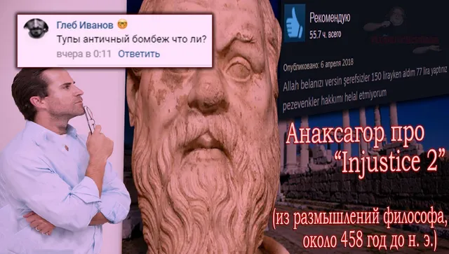
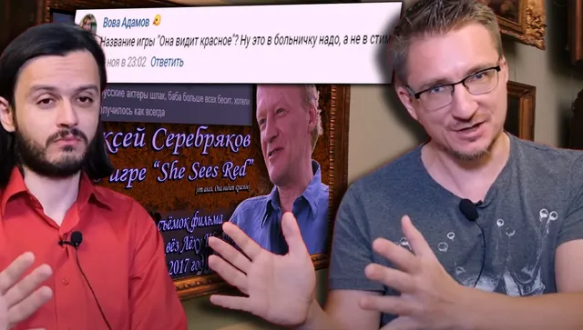

Ваши комментарии
ВКонтакте
😳Очередная неделя подходит к своему завершению.
15 ноября 2020 · №732 в выгрузке стены · оригинал во ВКонтакте ↗



#ВашиКомментарии@criticssteam #18
😳Очередная неделя подходит к своему завершению.
Встречаем свежую подборку иллюстраций ваших комментариев за неделю!
🏅[https://vk.com/@criticssteam-sistema-titulov|Титул Комментатора] сегодня получают:
🔱[id119602395|Вова Адамов]
🔱[id347679904|Андрей Язин]
🔱[id191917835|Глеб Иванов]
🔱[id491132613|Брюс Уиллис]
=====
> Всем спасибо.
😳Очередная неделя подходит к своему завершению.
Встречаем свежую подборку иллюстраций ваших комментариев за неделю!
🏅[https://vk.com/@criticssteam-sistema-titulov|Титул Комментатора] сегодня получают:
🔱[id119602395|Вова Адамов]
🔱[id347679904|Андрей Язин]
🔱[id191917835|Глеб Иванов]
🔱[id491132613|Брюс Уиллис]
=====
> Всем спасибо.